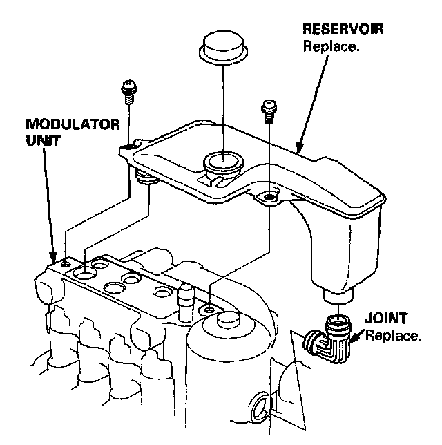

Reservoir Replacement
Reservoir Replacement
1. Drain the brake fluid completely from the reservoir.
2. Remove the modulator unit from the car.
3. Remove the reservoir from the modulator unit.
4. Install the reservoir in the reverse order of removal.
5. Fill the reservoir to the MAX (upper) level with fresh brake fluid.
6. Before installing the modulator unit on the car, be sure to bleed the air from the suction port in the modulator unit.
Note: After installing the modulator unit and bleeding the brakes, start the engine and make sure that the ABS indicator light goes off.